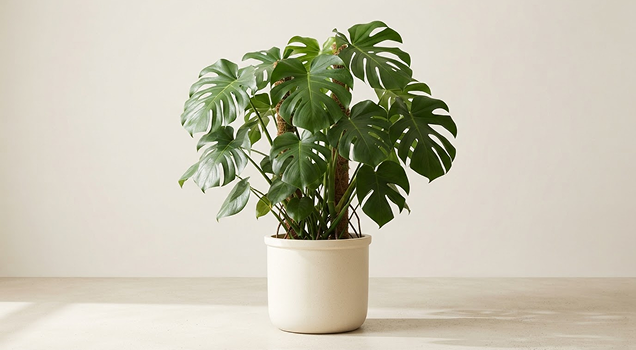
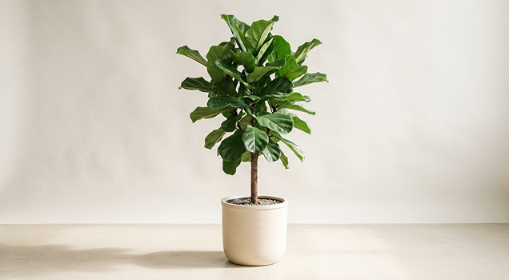
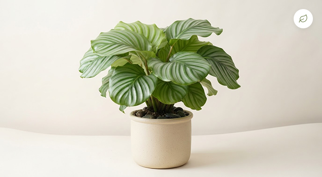
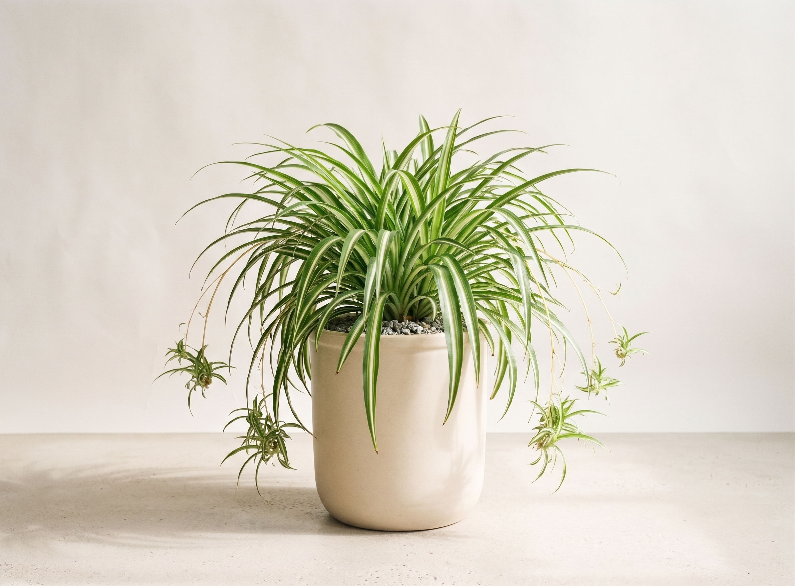
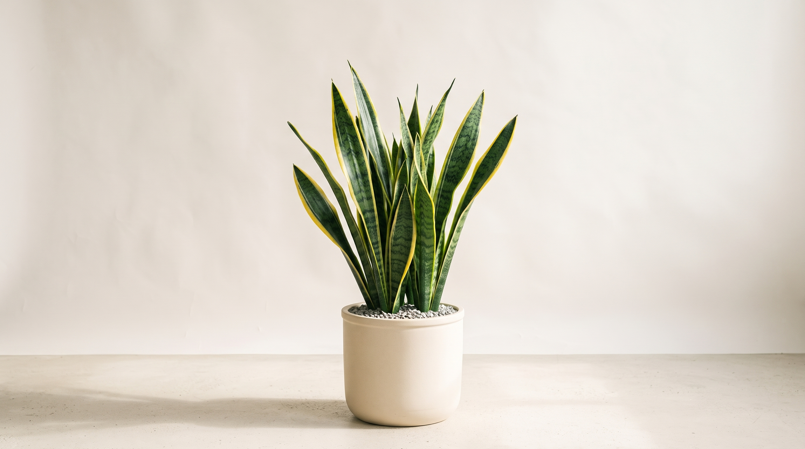
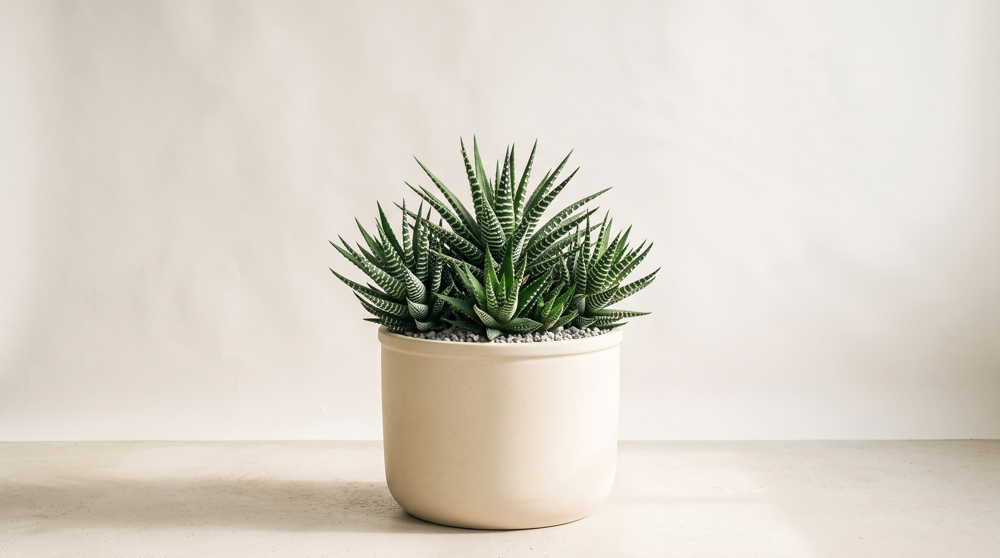

Розсіяне світло
Монстера Деліціоза
Тропічна красуня з виразними різьбленими листками. Любить стабільне тепло та вологе повітря.
- Полив: кожні 7 днів
- Максимальна висота: 150 см
- Безпека: Небезпечна для тварин
- Додано:

Розсіяне світло
Тропічна красуня з виразними різьбленими листками. Любить стабільне тепло та вологе повітря.

Яскраве світло
Скульптурний фікус із великим глянцевим листям. Найкраще росте на постійному місці без протягів.

Півтінь
Декоративна рослина з округлим листям у сріблясту смужку, яка ввечері піднімає листки вгору.

Розсіяне світло
Невибагливий очищувач повітря з дугоподібним строкатим листям, ідеальний для початківців.

Півтінь
Надзвичайно витривалий сукулент із щільним мечоподібним листям, що витримує рідкий полив.

Яскраве світло
Компактний сукулент із м'ясистими листками та білими рельєфними смужками, безпечний для котів і собак.